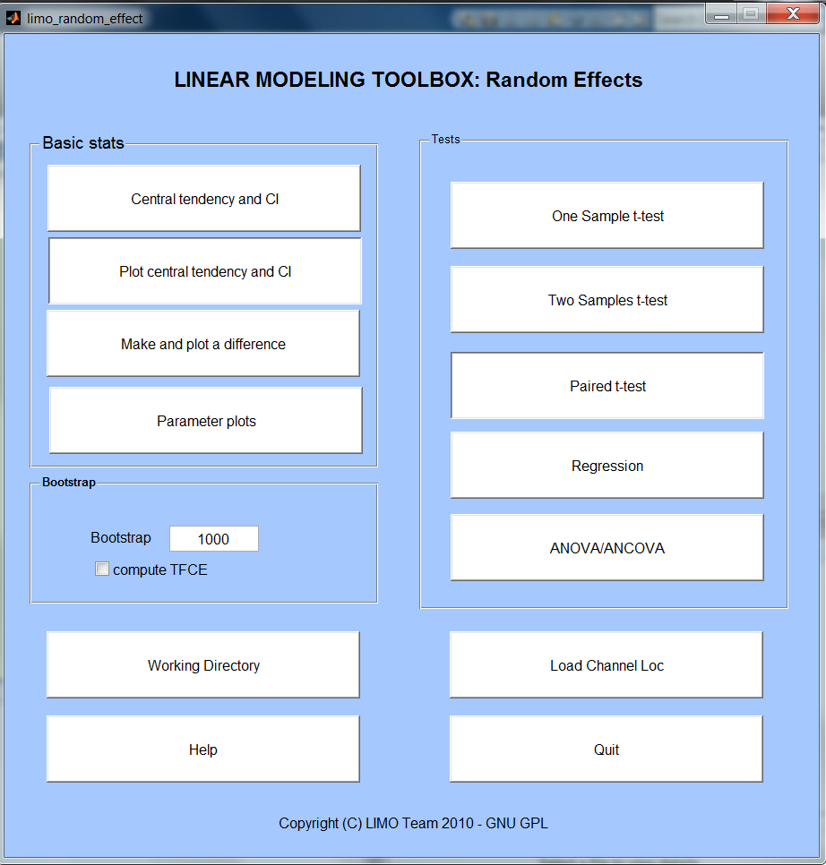

Before doing any stats across subjects, one needs a common reference space. This is achieved by using a common channel location description – this file has to be loaded via Load Channel Loc and can be created via LIMO Tools.
Basic stats
The central tendency and CI button allows performing 'averages' of data (either single trials for a subject or parameters across groups). This is called central tendency because you can choose to use standard means (or weighted if available) but also trimmed means, median or Harell Davis estimators. In each case a robust confidence interval is provided (see limo_central_tendency_and_ci).
Plot central tendency and CI button allows plotting as many data as you want, one electrode at a time - for instance X different conditions or electrodes or different estimators of the same condition
Make and plot a difference allows computing the difference between two data set and plot this difference with bootstrapped confidence intervals (not corrected for multiple comparisons - see limo_plot_difference).
Parameter plots: also to do standard box plots or correlation analyses (see limo_plots).
More information on basic stats can be obtained in the LIMO BASIC STATS power point (in the help directory)
Bootstrap
This is where you specify the number of bootstrap to perform (1000 by default). By bootstrapping the data under H0, we can estimate the distribution of maximum statistics (T, F, cluster mass) across the whole data space and thus correct for multiple comparisons. Type 0 if you don't want to compute any bootstrap – note that multiple comparisons correction will not be available.
Compute tfce, if bootsrap is computed it is then possible the apply the Threshol,d Free Cluster Enhancement procedure (see limo_tfce)
For an overview of multiple comparisons correction procedures see LIMO_Clustering.pdf (in the help directory)
Tests
From this section chose the statistical test you wish to perform. This can be applied on the beta.mat or the con.mat files. Note that you can either select by hand each file or select a single .txt file that contains the full names (i.e. path/file name/extension) of the Betas or con files. Such text file could look like this:
E:\My_Documents\MATLAB\eeglab12_0_2_1b\plugins\limo_eeg\tutorials\limo_data_set\Continuous_design\S1\Betas.mat
E:\My_Documents\MATLAB\eeglab12_0_2_1b\plugins\limo_eeg\tutorials\limo_data_set\Continuous_design\S2\Betas.mat
E:\My_Documents\MATLAB\eeglab12_0_2_1b\plugins\limo_eeg\tutorials\limo_data_set\Continuous_design\S3\Betas.mat
...
One sample t-test: is the (trimmed) mean of the sample different from 0 (see limo_trimci)
Two-samples t-tests: are the (trimmed) means between 2 groups of subjects different (see limo_yuen_ttest)
Paired t-tests: are the (trimmed) means between 2 conditions from the same subjects different (see limo_yuend_ttest)
Regression: is there a linear relashionship between the (weighted) EEG parameters and one or several variables (see limo_glm1 - note Iterative Reweighted Least Squares are used to weight subjects parameters according to how far they are from the rest of the data).
ANOVA/ANCOVA: are the (weighted) means different between groups. A covariate can also be added to control for their effect between groups (see limo_glm1 - note Iterative Reweighted Least Squares are used to weight subjects parameters according to how far they are from the rest of the data). Are the (trimmed) means different between conditions from the same subjects (see limo_robust_rep_anova). Note that for repeated measure ANOVA, only 1 independent factor can be entered (e.g. 3 groups of subjects but not 3 groups and 2 groups within those) and no covariate is permitted.
When prompted, enter the number of groups (N-ways ANOVA) or factors (repeated measures ANOVA) as a vector like [3 2] for a 3 by 2 ANOVA. In this case you would have 3 groups/conditions and within each of these groups/conditions 2 subgroups/subconditions. The design matrix will then contain 2 factors: the 1st factors with 3 levels and 2nd factor with 2 levels. An interaction term will also be created correspond to the 6 subgroups (3*2). When asked to select data, this is these subgroups that need to be entered. When prompted for data this would corresponds in this example to
condition 1 = data from factor 1 / group 1 and factor 2 / group 1
condition 1 2 = data from factor 1 / group 1 and factor 2 / group 2
condition 1 3 = data from factor 1 / group 2 and factor 2 / group 1
condition 1 4 = data from factor 1 / group 2 and factor 2 / group 2
condition 1 5 = data from factor 1 / group 3 and factor 2 / group 1
condition 1 6 = data from factor 1 / group 3 and factor 2 / group 2
More information on the various tests can be obtained in LIMO_mass_univariate.pdf (in the help directory)